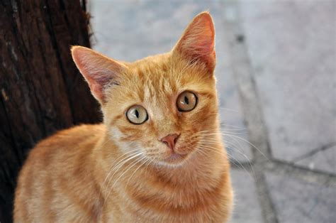

"Encontre o companheiro perfeito para encher sua vida de alegria. Nossa página de adoção oferece a chance de dar um lar amoroso
a um gato em busca de carinho e cuidado. Cada adoção cria uma história de amor única e constrói um futuro cheio de
ronronares e momentos especiais."

Whiskers
Conheça Whiskers, o gatinho curioso e destemido da Patas Felizes. Seus bigodes vibrantes são um reflexo de sua
personalidade aventureira. Ele adora explorar e está sempre pronto para uma brincadeira emocionante.

Aurora
Aurora é pura doçura em forma de felina. Seus olhos brilham como o nascer do sol, iluminando nossos corações.
Essa gatinha calma e afetuosa adora cochilar ao sol da tarde e receber carinhos gentis.

Ziggy
Ziggy, o gato com um olhar travesso e personalidade divertida, é a energia em forma de patinhas. Sempre pronto
para um desafio de caça aos brinquedos, ele traz risos e alegria a todos ao seu redor.

Luna
Luna, a exploradora noturna da Patas Felizes, é um enigma envolto em mistério. Com seus olhos expressivos, ela parece
compreender os segredos da lua. Sua companhia silenciosa traz conforto a qualquer hora do dia.

Merlin
Merlin, o gato sábio e tranquilo, é como um feiticeiro que espalha serenidade por onde passa. Seu pelo escuro e olhos
penetrantes escondem histórias mágicas que ele compartilha através de ronronares suaves.